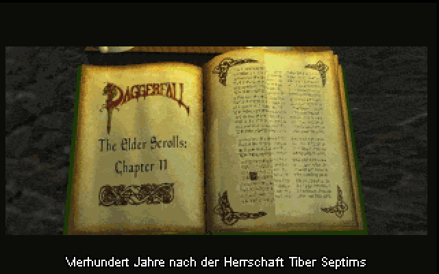
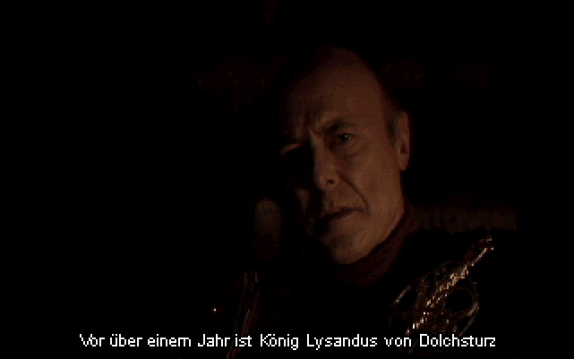
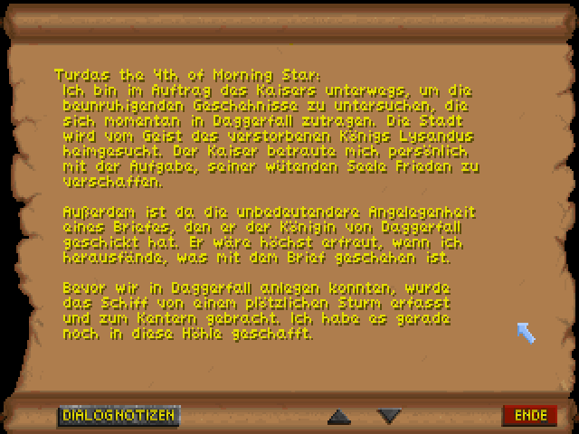
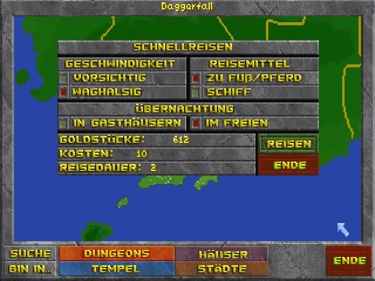
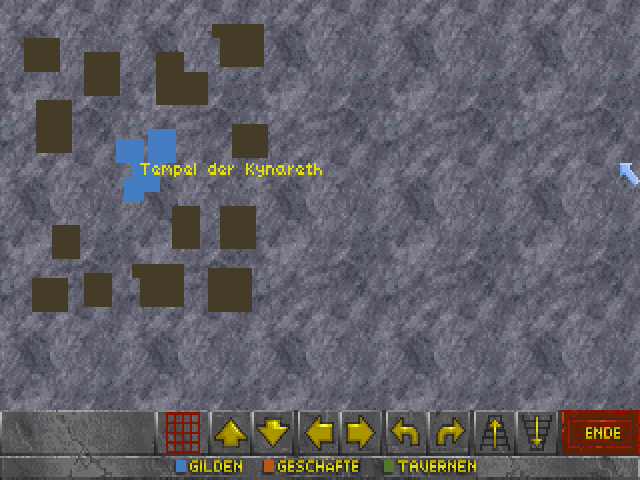
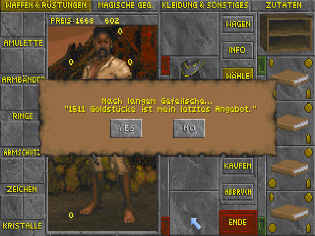

Daggerfall Deutsch
Daggerfall-Deutsch ist ein von Fans seit 2007 laufendes und im Jahr 2012 neu gestartetes deutsches Lokalisierungssprojekt für das 1996 erschienene The Elder Scrolls II: Daggerfall. Egal, ob Ihr Daggerfall bereits kennt oder zum ersten Mal in diese faszinierende Welt eintaucht – wir hoffen, dass Ihr ebenso viel Freude an der deutschen Version habt wie wir bei ihrer Erstellung. Daggerfall ist nicht nur ein Spiel, sondern (mMn) ein Meilenstein der Videospielgeschichte, dessen ursprüngliche Veröffentlichung leider von technischen Problemen überschattet wurde. Die engagierte Fan-Gemeinde hat jedoch viele der gröbsten Fehler beseitigt, und so konnten wir auch 14 Jahre nach dem Release an einer vollständigen deutschen Lokalisierung arbeiten.
Mittlerweile gibt es mit Daggerfall Unity eine moderne Re-Implementierung, die das Spiel für aktuelle Systeme und eine neue Generation von Spielern zugänglich macht. Da diese Version zahlreiche Verbesserungen und Möglichkeiten zur Modifizierung bietet, haben wir uns entschieden, zukünftige Lokalisierungen ausschließlich für Daggerfall Unity zu entwickeln.
Unser Ziel war es stets, eine stimmige und authentische Lokalisierung zu schaffen, die mit der Welt von The Elder Scrolls harmoniert und das Original respektvoll wiedergibt. Wir wünschen Euch viel Vergnügen beim Erkunden der Iliac-Bucht in deutscher Sprache!
Daggerfall Deutsch Unity
v0.90 | Anleitung in Docs/readme_DfDU_v0.90.txt | ~ 113 MB .zip-Datei)
Daggerfall Deutsch Classic
v0.77 (Empfohlen | DaggerfallSetup: Daggerfall v2.13 inkl. Daggerfall-Deutsch | ~ 190 MB .exe-Datei)
v0.77 (Sprachpatch für Daggerfall: manuelle Installation ➢ Anleitung in beiliegender README | ~ 54 MB .zip-Datei)
Eindrücke





